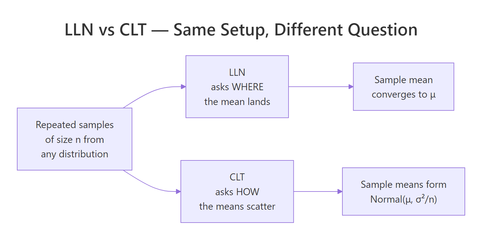
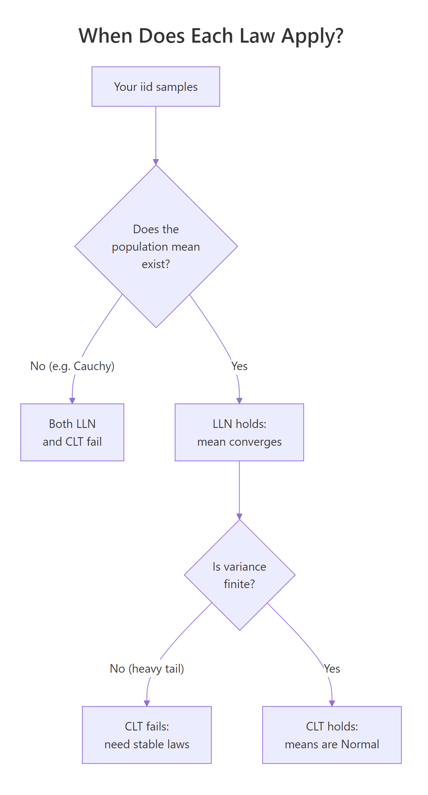

Law of Large Numbers vs Central Limit Theorem: Two Laws That Are Not the Same Thing
The Law of Large Numbers says the sample mean lands on the true population mean as you collect more data. The Central Limit Theorem says the spread of those sample means around the target follows a normal distribution. One promises a destination; the other promises a shape.
What's the one-line difference between LLN and CLT?
Here it is in one breath: the Law of Large Numbers (LLN) tells you where the sample mean lands, and the Central Limit Theorem (CLT) tells you how sample means scatter around that landing spot. The cleanest way to feel the difference is to draw many samples from a skewed distribution and look at two pictures of the same simulation. The left watches a single running mean march toward the true value. The right stacks many independent sample means into a histogram.
The left plot's wiggly line settles on 1, that's LLN. The right plot's histogram is bell-shaped and centered on 1, with an empirical standard deviation of 0.183 that matches the CLT prediction $\sigma/\sqrt{n} = 1/\sqrt{30} \approx 0.183$. Same data, two different questions, two different answers.
Try it: Re-run the same simulation but draw sample means from samples of size 5 instead of 30. Look at the histogram width and explain in one sentence what changed.
Click to reveal solution
Explanation: Smaller n means each sample mean is less precise, so the histogram is wider, its standard deviation grows like 1/sqrt(n). With n=5 the sd is about 0.45, more than double the value at n=30.
What does the Law of Large Numbers actually say?
The plain-English version is what you saw above: take more and more iid samples and the sample mean closes in on the population mean. The formal version is just that statement made precise.
For independent and identically distributed random variables $X_1, X_2, \ldots, X_n$ with $E[X] = \mu$, the Weak Law of Large Numbers says:
$$\bar{X}_n \xrightarrow{P} \mu \quad \text{as } n \to \infty$$
Where:
- $\bar{X}_n = \frac{1}{n}\sum_{i=1}^{n} X_i$, the sample mean of the first $n$ observations
- $\xrightarrow{P}$ means "converges in probability", for any tolerance $\epsilon > 0$, $P(|\bar{X}_n - \mu| > \epsilon) \to 0$
- $\mu$, the true population mean
A stronger version (the Strong Law of Large Numbers) replaces convergence in probability with almost-sure convergence. The practical takeaway is the same: the sample mean lands on the truth. The strong version just guarantees that if you watched the simulation forever, almost every individual path would converge, not just most of them in probability.
The simulation that makes the LLN feel real is the running proportion of heads in a biased coin flip. Set the true probability to 0.3 and watch the sample proportion home in on it.
At n=10 the proportion is off by 0.10 from the truth. By n=10,000 the gap is down to 0.0014. The line on the plot doesn't approach the dashed red line in a straight march, it wiggles, sometimes overshoots, sometimes lags. But the wiggles get smaller, and the overall trajectory is locked toward 0.3.
Try it: Change the bias to prob = 0.7 and predict before running where the line will settle.
Click to reveal solution
Explanation: LLN guarantees the running proportion converges to the true probability p. Change p and the destination changes accordingly, the plot shape is the same, the dashed line just moves.
What does the Central Limit Theorem actually say?
LLN watches one running mean. CLT asks a different question: if you collect many sample means from independent samples of size $n$, what does the distribution of those means look like? The answer is the surprise, it morphs into a normal regardless of the parent distribution's shape, as long as the parent has finite variance.
The formal statement: for iid $X_1, \ldots, X_n$ with mean $\mu$ and finite variance $\sigma^2$,
$$\sqrt{n}(\bar{X}_n - \mu) \xrightarrow{d} N(0, \sigma^2)$$
Equivalently and more useful in practice:
$$\bar{X}_n \approx N\left(\mu, \frac{\sigma^2}{n}\right) \quad \text{for large } n$$
Where:
- $\xrightarrow{d}$ means "converges in distribution", the cumulative distribution function of $\sqrt{n}(\bar{X}_n - \mu)$ converges to the normal CDF
- $\sigma^2$, the population variance (must be finite)
- $\sigma / \sqrt{n}$, the standard error of the sample mean, the typical CLT scaling
Visualise the convergence by drawing 5000 sample means at three different sample sizes from the same skewed parent (the exponential).
At n=2 the histogram is still visibly skewed, two exponentials averaged together are not yet normal. At n=10 the right tail is still a bit heavier than the red normal curve, but the bulk fits. At n=30 the empirical histogram and the theoretical normal are nearly indistinguishable, and the empirical standard deviations match $1/\sqrt{n}$ to three decimals.
n calls for a quick sanity check by simulation before trusting the CLT.Try it: Repeat the experiment with a uniform parent runif(n, 0, 1). Predict whether the histograms become normal faster or slower than they did for the exponential.
Click to reveal solution
Explanation: The uniform distribution is symmetric, so the CLT kicks in much faster than for the skewed exponential, even at n=5 the histogram is visibly bell-shaped. Symmetry buys you smaller required n; skew costs you larger n.
How do LLN and CLT work together in the same simulation?
The two laws are not competing answers to the same question. They are two views of the same experiment. LLN watches the limit of one path. CLT watches the cross-section of many paths. The link is that the CLT predicts how wide a confidence band the running mean lives inside, and that band shrinks at the $1/\sqrt{n}$ rate.

Figure 1: LLN and CLT ask different questions about the same data, one about destination, one about scatter.
Make the link concrete by drawing the running mean from an exponential and overlaying the CLT-derived 95% band $\mu \pm 1.96 \cdot \sigma / \sqrt{n}$.
The blue dashed band funnels in toward the red true-mean line, and the running mean stays inside it (with brief excursions, which is exactly what a 95% band predicts). The band's full width drops from 0.39 at n=100 to 0.039 at n=10,000, a tenfold shrinkage for a 100-fold increase in n, the signature $1/\sqrt{n}$ rate.
| Question | LLN | CLT |
|---|---|---|
| What converges? | The sample mean $\bar{X}_n$ | The distribution of $\bar{X}_n$ |
| Type of convergence | In probability (or almost surely) | In distribution |
| Requires finite mean? | Yes | Yes |
| Requires finite variance? | No | Yes |
| Gives a distribution? | No, just a destination | Yes, Normal$(\mu, \sigma^2/n)$ |
| Practical use | Justifies Monte Carlo estimates | Builds confidence intervals and tests |
Try it: Compute the CLT half-band width at n=2500 by hand (using $\sigma=1$) and verify against the simulation's running standard error.
Click to reveal solution
Explanation: The CLT half-band is $1.96 \cdot \sigma / \sqrt{n}$. Plug in $\sigma=1$ and $n=2500$ to get 0.0392. That matches band_upper[2500] - 1 from the simulation, the half-distance from the true mean to the upper band edge.
When do LLN and CLT break down?
Both laws come with fine print. LLN needs the population mean to exist. CLT needs the population variance to be finite. Heavy-tailed distributions can violate either condition, and the cleanest demonstration of failure is the Cauchy distribution, it has no finite mean at all, so LLN fails and CLT-style normality of sample means never appears.

Figure 2: A simple decision tree for when each law applies.
Draw 10,000 Cauchy values, compute the running mean, and watch it refuse to settle.
The exponential running mean clamps onto 1 and never lets go. The Cauchy running mean jumps wildly even at n=10,000, sometimes wandering by half a unit between snapshots. A single extreme draw can shift the running mean significantly because the Cauchy's tails decay so slowly that very large values keep arriving at every scale. Re-running with a different seed gives a totally different trajectory.
mean() and report it as a population estimate, you may be reporting noise, always check for finite mean and variance before quoting Monte Carlo means.Try it: Use a Student's t with df=2 (heavy tail, finite mean but infinite variance). Predict whether LLN holds and whether CLT holds, then check.
Click to reveal solution
Explanation: A t(df=2) distribution has a finite mean (zero) but infinite variance. LLN still holds, the running mean drifts toward zero but more erratically than for a thin-tailed distribution. CLT, however, fails: the sampling distribution of the mean is still heavy-tailed and not well approximated by a normal at any practical n.
Practice Exercises
These capstone exercises combine the concepts from each section. They use distinct variable names (prefixed my_) so they do not overwrite tutorial state.
Exercise 1: Empirical convergence rate of the LLN
Estimate the LLN convergence rate. Take a running mean of 50,000 draws from rexp(rate = 2) (true mean 0.5). Compute the absolute error from 0.5 at n = 100, 1000, and 10,000 and confirm the error shrinks by roughly a factor of $\sqrt{10}$ each time (the $1/\sqrt{n}$ rate).
Click to reveal solution
Explanation: LLN promises convergence; CLT pins down the rate. The absolute error of the running mean shrinks as $\sigma/\sqrt{n}$, so a 100x increase in n should reduce error by about $\sqrt{100} = 10$. Two factors of $\sqrt{10}$ (each between 1000x intervals) should each be near 3.16, small-sample noise pushes them off slightly but the order of magnitude matches.
Exercise 2: CLT for a sample proportion
Demonstrate CLT for a sample proportion. Simulate 5000 experiments where each experiment is 100 fair coin flips. The sample proportion is the count of heads divided by 100. Plot a histogram of the 5000 sample proportions and overlay the CLT-predicted normal $N(0.5, 0.05)$.
Click to reveal solution
Explanation: For a Bernoulli with $p = 0.5$, the variance of one trial is $p(1-p) = 0.25$. The standard error of the sample proportion at $n = 100$ is $\sqrt{0.25/100} = 0.05$. The histogram and the overlaid normal match almost exactly, a textbook CLT.
Exercise 3: Borderline case, Pareto with shape α=3
Investigate whether CLT applies to a Pareto distribution with shape $\alpha = 3$. Simulate it via $X = U^{-1/\alpha}$ where $U \sim$ Uniform(0,1). The distribution has finite mean $\alpha/(\alpha-1) = 1.5$ and finite variance only when $\alpha > 2$. Draw 5000 sample means of size 30, plot the histogram, and overlay the theoretical normal.
Click to reveal solution
Explanation: Pareto with $\alpha = 3$ has finite variance, so CLT should apply, and it does. The empirical mean (1.52) is close to the theoretical 1.5, and the empirical sd (0.171) is close to the theoretical 0.158. A small upward bias in the sd is the signature of a still-heavy right tail at n=30, bumping n to 100 would close the gap further.
Complete Example: A/B test sample size from first principles
Tie LLN and CLT together with a concrete A/B test problem. A product manager observes a 0.5 percentage-point conversion lift in a small test (1000 users per group) and asks: how big does the test need to be before that estimated lift is trustworthy?
LLN tells you the estimate eventually lands on the truth. CLT tells you how wide the uncertainty band is for any given n. The sample size formula falls right out of the CLT.
For a desired margin of error E at 95% confidence, the required sample size per group is:
$$n = \left(\frac{1.96 \cdot \sigma}{E}\right)^2$$
For a Bernoulli with p ≈ 0.05 (a realistic conversion baseline), $\sigma \approx \sqrt{p(1-p)} \approx 0.218$. Pick a target margin of error of 0.2 percentage points (so we can distinguish a 0.5pp lift from zero with confidence).
The required sample size is about 45,600 per group. At that size the standard error of the lift is 0.00144, so a 0.5pp lift is roughly 3.5 standard errors away from zero, clearly significant. The simulated A/B test produced a 0.48pp lift, and the 95% CI [0.20pp, 0.77pp] excludes zero, the test would correctly conclude the lift is real. At the original 1000 users per group, the standard error would have been about 0.0098, so a 0.5pp lift would be only half a standard error from zero, statistically indistinguishable from random noise.
This is LLN and CLT working together in production: LLN justifies why a large enough sample will give the right answer, and CLT tells you how large that sample needs to be.
Summary
| Aspect | Law of Large Numbers | Central Limit Theorem |
|---|---|---|
| One-line | Sample mean → true mean | Sample-mean distribution → Normal |
| Convergence type | In probability (Weak) or almost sure (Strong) | In distribution |
| Requires finite mean? | Yes | Yes |
| Requires finite variance? | No | Yes |
| Output | A point (the destination) | A shape (Normal) |
| Rate of convergence | $\sigma/\sqrt{n}$ for the absolute error | Same $1/\sqrt{n}$ scaling |
| Practical use | Justifies Monte Carlo, simulation, sample averages | Confidence intervals, hypothesis tests, sample size formulas |
| Common failure case | Cauchy (no mean) | Cauchy or t(df=2) (infinite variance) |
The two laws are complementary. LLN says where the sample mean lands; CLT says how it scatters around the landing spot. Confusing them is the most common mistake in introductory statistics, and the most consequential, because almost every applied technique (CIs, t-tests, A/B tests, bootstrap) leans on the CLT's distributional promise, not just LLN's destination promise.
References
- Wasserman, L., All of Statistics, Chapter 5 (Convergence of Random Variables). Springer (2004). Link
- Casella, G. & Berger, R., Statistical Inference, 2nd Edition, Chapter 5 (Properties of a Random Sample). Cengage (2002).
- Wickham, H., Advanced R, 2nd Edition, Chapter 23 (Measuring performance). CRC Press (2019). Link
- R Core Team, Distributions reference (
rcauchy,rexp,rbinom,rt). Link - MIT 18.05, Central Limit Theorem and the Law of Large Numbers, Class 6 prep notes. Link
- Wikipedia, Law of Large Numbers. Link
- Wikipedia, Central Limit Theorem. Link
Continue Learning
- Central Limit Theorem in R: Simulate It From Skewed, Bimodal, and Uniform Distributions, go deeper on CLT with parent shapes the simulation in this article didn't cover.
- Sampling Distributions in R: What Actually Varies Across Repeated Samples, the underlying machinery both laws describe.
- Normal, t, F, and Chi-Squared in R: Understand Each Distribution and When It Arises, the limit distributions referenced throughout this tutorial.